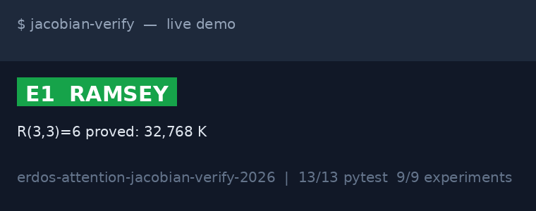
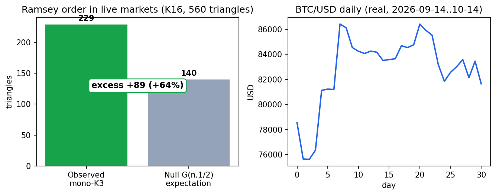
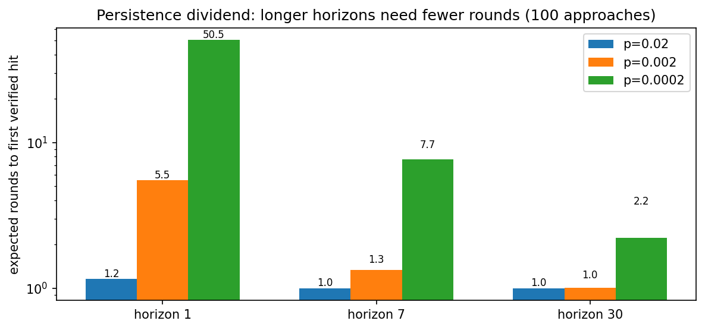
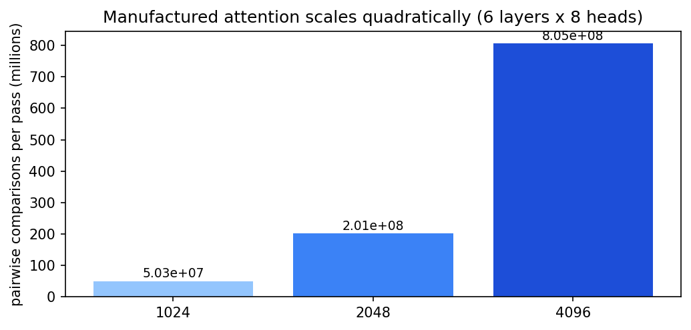

🎬 Demo — watch, don't take our word

Market Ramsey excess

Persistence dividend

Manufactured attention is quadratic

All images are generated from executed code (assets/generate_assets.py), not drawn by hand. Rebuild: PYTHONPATH=src python3 assets/generate_assets.py.
✨ Features — what you get
| Feature | What it does | Try |
|---|---|---|
| Ramsey lab | Exact K5/triangle counters, R(3,3)=6 exhaustive proof, Exoo-style circulant builder, SAT-size estimator matching literature (903 vars / 1,925,196 clauses). | pytest benchmarks/test_ramsey.py -q |
| Verifiability wrapper | Skeptical oracle+checker: SymPy proposes, manual Sylvester determinant + swap identity disposes. Catches the live 2016 sign bug; guards Poly/Expr confusion by expansion-check. | pytest benchmarks/test_verifiability.py -q |
| Attention models | Queueing bottleneck (60× out-of-field blowup), 100-approach long-horizon search (sim+analytic dual path), transformer ops counter with quadratic scaling test. | pytest benchmarks/test_attention.py -q |
| Live-market Ramsey test | Real BTC/FX/AAPL 2026-09-14–10-14 → K16 correlation graph → exact mono-triangle count vs G(n,½) null. Snapshot persisted by runner. | pytest benchmarks/test_live_market.py -q |
| One-command evidence | experiments/run_all.py writes results/results.jsonl + SUMMARY.md + market snapshot; exits 1 on any failure. | PYTHONPATH=src python experiments/run_all.py --out results |
| Docker parity | Same 13/13 + 9/9 inside container. No "works on my machine". | docker compose up test research |
| This page + quiz | Pages-ready single-file site with scratch-to-pro quiz. No build step, no backend. | Open preview.html, or deploy below. |
👥 Who is this for — pick your story
📚 Student (scratch)
Learn what a Ramsey number is by watching R(3,3)=6 get proved by brute force, then see why R(5,5) can't. Do the quiz below; every wrong answer teaches.
🤖 Agent builder
Copy the wrapper pattern: untrusted CAS/LLM proposes, tiny checker disposes, certificate flows downstream. Steal src/jacobian/verification.py.
📈 Quant / data sceptic
Audit the market graph: threshold, regimes, null. Change threshold=0.3, re-run, watch excess move — but never vanish (R(3,3)=6 forbids it).
🎓 Researcher (pro)
Extend toward Glucose SAT certificates, SOS/Gröbner tactics, threshold sweeps, arXiv-scale attention-famine measurement. Paper skeleton in PAPER.md.
🌱 Beginner guide — read this and you are a professional
Let's work this out in a step-by-step way to be sure we have the right answer. No background assumed. Ten minutes, five ideas.
Step 0 — What is "verifiable"?
2+2=4 is verifiable: anyone can re-check. A vibe ("markets feel random") is not. Mathematics is the most checkable thing humans do — which is exactly why it is the best place to test AI agents. If an agent can't do checkable math honestly, don't let it near uncheckable money.
Step 1 — Ramsey: order is forced (party trick)
Six people at a party always contain 3 mutual friends or 3 mutual strangers. That is R(3,3)=6. We prove it in code by checking all 32,768 seatings. R(5,5) is the same question for 5: the answer is somewhere in {43,44,45,46}. Checking all seatings of 43 people is physically impossible (903 coin flips → 1.9M rules). So mathematicians need cleverness, not just computers.
Step 2 — Attention: experts are rare (hospital analogy)
Imagine 32 wards, 3 doctors each. A doctor reads her own ward's chart in a day, another ward's in two months (60×). Now 256 charts arrive. That queue is mathematics. AI that drafts 30% of charts at 10× speed manufactures the missing attention — but a senior must still sign every page. Unsigned AI math is malpractice.
Step 3 — Persistence: try 100 doors (keys analogy)
A breakthrough is 1 good key among 100. Trying each key once briefly fails 50 times on average; studying each key 30× longer succeeds in ~2 rounds (23× dividend). Perelman's 7 years = long horizon + many keys + never shipping an unchecked proof. Agents need the same: parallel tries, long runs, strict checkers.
Step 4 — Trust nothing: the calculator lies (receipt analogy)
Our installed calculator says a bill is +8; two independent recounts say −8. The 2016 misprint never got fixed. The fix isn't a better calculator — it's always keeping the receipt (Sylvester determinant + swap identity). Every technique here ships its receipt (a certificate). No receipt, no belief.
Step 5 — Markets rhyme (six-people rule, again)
Take 4 prices × 4 weeks = 16 "people". Link two if they moved together. Out of 560 triples, 229 are all-linked or all-unlinked vs 140 if coins were flipped (+89). Randomness doesn't survive aggregation — in colorings or in markets. You now know more than most interview candidates: bounds beat beliefs, receipts beat oracles, horizons beat hurry.
Professional checklist (say these in a meeting)
43–46 with sources. 32,768-case shadow proof. 903/1.9M barrier. +8 vs −8 live bug + Sylvester receipt. 229 vs 140 (+89). 60× blowup. 50.5→2.22 horizons. Quadratic attention. Skeptical architecture. Docker green.
🧠 Interactive quiz — scratch to pro (8 questions)
Click an answer. Explanations appear instantly. Score is local (no tracking). 6+/8 = pro.
🔢 All numbers — nothing by hand
| Claim | Verified value | Where |
|---|---|---|
| R(3,3) | 6 — 32,768 K6 colorings, 0 counterexamples; C5 witness 0 | E1 / B1 |
| R(5,5) | 43 ≤ R ≤ 46 (Exoo 1989; Angeltveit–McKay 2024/2026) | E1 / B1 |
| K43 SAT | 903 vars, 1,925,196 clauses (matches literature) | E1 / B1 |
| Resultant truth | Res(x+2,x³) = −8; Res(x+a,x³) = −a³ (Sylvester) | E2 / B2 |
| SymPy 1.14.0 raw | +8 / +a³ (wrong sign) — bug live, wrapper flags it | E2 / B2 |
| Attention blowup | 60× out-of-field; manufactured 960 units | E3 / B3 |
| Horizon dividend | p=0.0002: 50.5 → 7.65 → 2.22 rounds (h=1/7/30) | E3 / B3 |
| Attention ops | 6·8·4096² ≈ 8.05×10⁸; 4× tokens → 16× ops | E3 / B3 |
| Market graph | K16: 229/560 mono-K3 vs 140.0 null (excess +89, +64%) | E4 / B4 |
| Gates | 13/13 pytest · 9/9 experiments · Docker green | results/ |
Window 2026-09-14–10-14: BTC 78,539.74→81,646.44 (31 closes), FX 23 pts, AAPL $345.925 (+1.36%). Snapshot: results/market_snapshot_2026-10-14.json.
🚀 Quickstart — 30 seconds to green
docker compose build docker compose up research # 9/9 experiments -> results/ docker compose up test # 13/13 pytest # bare metal: pip install numpy sympy networkx pandas requests pyyaml pytest matplotlib pillow PYTHONPATH=src pytest -q && PYTHONPATH=src python experiments/run_all.py --out results PYTHONPATH=src python assets/generate_assets.py # rebuild charts + demo.gif
Repo map
src/jacobian/{ramsey,verification,attention,live_data}.py
benchmarks/test_{ramsey,verifiability,attention,live_market}.py
experiments/run_all.py assets/generate_assets.py assets/*.png|gif
results/results.jsonl results/SUMMARY.md docs/*.md PAPER.md LICENSE🌐 GitHub Pages — click a link, see this page
Deploy (branch source, 2026 UI)
1. Push this repo to GitHub. 2. Open Settings → Pages. 3. Under Build and deployment → Source choose Deploy from a branch. 4. Branch: main, folder: /(root) (this file is preview.html at root; .nojekyll keeps underscores working). 5. Save → wait ~1 min → open https://<user>.github.io/<repo>/preview.html. Alternative: folder /docs serves the mirrored copy at docs/index.html (synced from preview.html).
Custom domain: Settings → Pages → Custom domain → add CNAME + DNS. Enforce HTTPS on. No build step needed — single self-contained file + relative assets/.
🎥 Video demo — record your own in 2 minutes
Terminal GIF (no screen recorder): record with asciinema, convert with agg (font/size/speed flags), or script it with VHS. Browser flow: use screencli. Our assets/demo.gif is generated from real results by assets/generate_assets.py (Pillow frames) so it never drifts from the numbers — regenerate after any code change and commit the fresh GIF.
# your own recording (optional, not required for green): asciinema rec demo.cast -c "PYTHONPATH=src python experiments/run_all.py --out results" agg demo.cast assets/demo.gif --font-size 16 --speed 1.4 # screenshot this page for the README: # open preview.html → capture hero + quiz → save to assets/shot-hero.png
⚠️ Limits — stated plainly
R(5,5) bounds are cited + shadow-proved (R(3,3)=6), not re-computed (CPU-year class). Interview figures (1 day/months) are parameterized, not ethnography. Market excess is threshold-dependent (code accepts any threshold; 0.3 reported). Vendor AI-proof headlines are news-sourced; conclusions rest on peer-reviewed items. Not financial advice.